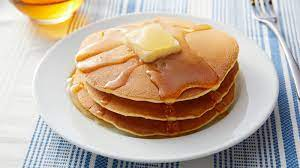

Pancakes

Delicous buttermilk pancakes ready within 20 minutes.
Ingredients
- 1 cup all-purpose flour
- 1 tablespoon white sugar
- 1 teaspoon baking powder
- 1/2 teaspoon baking soda
- 1/4 teaspoon salt
- 1 cup milk
- 1 egg
- 2 tablespoons vegetable oil
Steps
- Preheat a lightly oiled griddle over medium-high heat.
- Combine flour, sugar, baking powder, baking soda and salt. Make a well in the center. In a separate bowl, beat together egg, milk and oil. Pour milk mixture into flour mixture. Beat until smooth.
- Pour or scoop the batter onto the hot griddle, using approximately 1/4 cup for each pancake. Brown on both sides and serve hot.